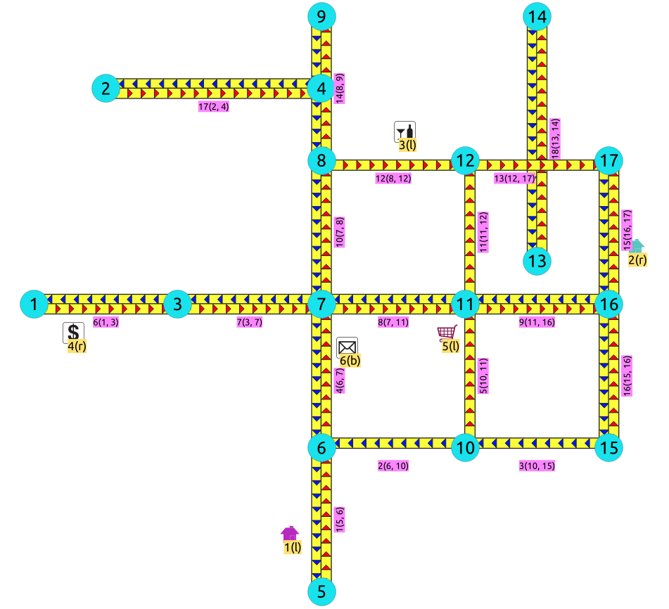
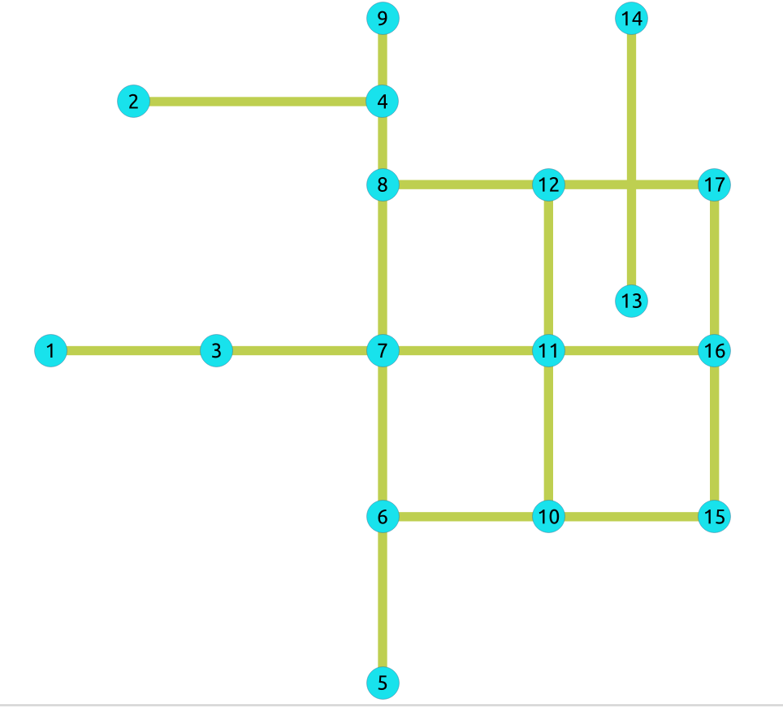
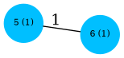
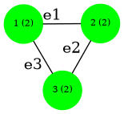
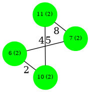
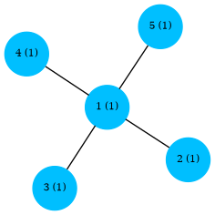

pgr_coreNumbers - Experimental¶
pgr_coreNumbers - Computes the core number of each vertex in an undirected
graph using k-core decomposition.
Experimental
警告
Possible server crash
These functions might create a server crash
警告
实验性函数
它们不是当前版本的正式版本。
它们可能不会正式成为下一个版本的一部分：
这些函数可能不使用 ANY-INTEGER 和 ANY-NUMERICAL
名称可能会改变。
签名可能会改变。
功能可能会改变。
pgTap 测试可能丢失。
Might need c/c++ review.
文档可能需要重写。
需要从社区获取大量反馈意见。
可用性
Version 4.1.0
新实验性功能。
描述¶
The core number of a vertex is the largest value \(k\) such that the vertex belongs to the \(k\)-core of the graph.
The \(k\)-core of a graph is the maximal subgraph in which every vertex has degree at least \(k\) within that subgraph. K-core decomposition iteratively removes vertices of degree less than \(k\) until no such vertices remain, increasing \(k\) at each stage. The process assigns one core number to every vertex.
The core number says how deeply a vertex sits inside the graph:
Core \(1\) vertices are peeled in the first step. They are terminal nodes of the peeled graph, adjacent to at most one other vertex in the induced subgraph.
Core \(2\) vertices survive that step. They lie on cycles, or on the chains joining them.
Core \(3\) and above mark dense regions where every vertex keeps three or more neighbors however much of the graph is peeled away.
Parallel edges between the same pair of vertices are collapsed into a single edge before the peeling starts, so edge multiplicity does not inflate core numbers.
Three parallel edges between two vertices give both vertices core \(1\), the same as a single edge.
Self loop: a vertex is not a neighbor of its own vertex, so it is dropped before peeling and does not contribute to that vertex's degree.
A vertex whose only edge is a self loop has no real neighbors left, So the core number is 0.
特征
适用于 无向 图。
Loops and parallel edges are removed.
All vertices are kept
Costs are ignored
Each vertex receives exactly one core number
Results:
Number of returned rows: \(|V|\).
Ordered by
nodeascending.No rows returned when no edges found. Emits a
NOTICE
Running time: \(O(|E| + |E| + |V| log |V|)\)
Loop and parallel removal: \(O(|E|)\)
Peeling algorithm: \(O(|E|)\)
Sorting: \(|V| log |V|\)
 Boost 图内部
Boost 图内部
签名¶
总结
(seq, node, core)- 示例:
Core numbers on a subgraph of 示例数据
SELECT * FROM pgr_coreNumbers(
'SELECT id, source, target, cost, reverse_cost
FROM edges WHERE id < 8'
) ORDER BY node;
seq | node | core
-----+------+------
1 | 1 | 1
2 | 3 | 1
3 | 5 | 1
4 | 6 | 1
5 | 7 | 1
6 | 10 | 1
7 | 11 | 1
8 | 15 | 1
(8 rows)
说明
Vertices are colored by core number in the diagrams below:
deepskyblue for core \(1\) and green for core \(2\).
All returned vertices have core number \(1\); they belong to the 1-core but not to any higher core.
Vertices \(5\) and \(15\) are terminal nodes in this subgraph (degree \(1\)).
Vertices \(6\), \(7\), and \(10\) have higher degree here, but peeling degree-\(1\) vertices first removes the entire subgraph before a 2-core can form.
The following diagram shows edges \(\{1, \ldots, 7\}\) from
示例数据; every vertex label shows node (core).
![graph G {
node [shape=circle;style=filled;width=.5;fixedsize=true;fontsize=8];
1,3,5,6,7,10,11,15 [color=deepskyblue];
5 [pos="0,0!";label="5 (1)"];
6 [pos="1,0!";label="6 (1)"];
10 [pos="2,0!";label="10 (1)"];
15 [pos="3,0!";label="15 (1)"];
7 [pos="1,1!";label="7 (1)"];
11 [pos="2,1!";label="11 (1)"];
1 [pos="0,2!";label="1 (1)"];
3 [pos="1,2!";label="3 (1)"];
5 -- 6 [label="1"];
6 -- 10 [label="2"];
10 -- 15 [label="3"];
6 -- 7 [label="4"];
10 -- 11 [label="5"];
1 -- 3 [label="6"];
3 -- 7 [label="7"];
}](_images/graphviz-10c40397530f536df84701b340d3835a132272fa.png)
The next subgraph uses edges \(\{1, 2, 3, 4\}\), the same set as the main example of pgr_betweennessCentrality - 实验性. Every vertex is still core \(1\) because the structure is a tree-like path with terminal nodes at \(5\) and \(15\).
![graph G {
5,7,15,6,10 [shape=circle;style=filled;width=.5;fixedsize=true;fontsize=8];
5,7,15,6,10 [color=deepskyblue];
5 [pos="0,0!";label="5 (1)"];
6 [pos="0,1!";label="6 (1)"];
7 [pos="0,2!";label="7 (1)"];
10 [pos="1,1!";label="10 (1)"];
15 [pos="2,1!";label="15 (1)"];
5 -- 6 [label="1"];
6 -- 10 [label="2"];
10 -- 15 [label="3"];
6 -- 7 [label="4"];
}](_images/graphviz-ff23191fefc6ae69d5506a0d1487b42cdf8ad59b.png)
K-core peeling (illustration)
On edges \(id < 10\), vertices \(5\) and \(15\) are removed first because they have degree \(1\). After further peeling, vertices \(6\), \(7\), \(10\), and \(11\) remain as the 2-core (shown in green below).
![graph G {
node [shape=circle;style=filled;width=.5;fixedsize=true;fontsize=8];
1,3,5,15,16 [color=deepskyblue];
6,7,10,11 [color=green];
5 [pos="0,0!";label="5 (1)"];
6 [pos="1,0!";label="6 (2)"];
10 [pos="2,0!";label="10 (2)"];
15 [pos="3,0!";label="15 (1)"];
7 [pos="1,1!";label="7 (2)"];
11 [pos="2,1!";label="11 (2)"];
16 [pos="3,2!";label="16 (1)"];
1 [pos="0,2!";label="1 (1)"];
3 [pos="1,2!";label="3 (1)"];
5 -- 6 [label="1"];
6 -- 10 [label="2"];
10 -- 15 [label="3"];
6 -- 7 [label="4"];
10 -- 11 [label="5"];
7 -- 11 [label="8"];
11 -- 16 [label="9"];
1 -- 3 [label="6"];
3 -- 7 [label="7"];
}](_images/graphviz-77c0f525a232146baab5d19ca545ce7e19e9ae17.png)
参数¶
参数 |
类型 |
描述 |
|---|---|---|
|
Edges SQL 如下所述。 |
内部查询¶
Edges SQL¶
列 |
类型 |
默认 |
描述 |
|---|---|---|---|
|
ANY-INTEGER |
边的标识符。 |
|
|
ANY-INTEGER |
边的第一个端点顶点的标识符。 |
|
|
ANY-INTEGER |
边的第二个端点顶点的标识符。 |
|
|
ANY-NUMERICAL |
edge ( |
|
|
ANY-NUMERICAL |
-1 |
边(
|
其中：
- ANY-INTEGER:
SMALLINT,INTEGER,BIGINT- ANY-NUMERICAL:
SMALLINT,INTEGER,BIGINT,REAL,FLOAT
结果列¶
列 |
类型 |
描述 |
|---|---|---|
|
|
Sequential value starting from 1. |
|
|
顶点的标识符。 |
|
|
Core number of the vertex: the largest \(k\) for which the vertex belongs to the \(k\)-core. |
其他示例¶
本节的示例基于 示例数据 网络。
Sample network overview¶
{kind=link}

Directed sample network. pgr_coreNumbers treats every edge as undirected,
so cost and reverse_cost are not used in the calculation.¶
Comparing with pgr_betweennessCentrality - 实验性 on the same edges¶
Both functions use the same Edges SQL format. The betweenness example on
edges \(\{1, 2, 3, 4\}\) measures shortest-path influence; core numbers
measure peeling resilience.
1) Core numbers on edges \(\{1, 2, 3, 4\}\)¶
SELECT * FROM pgr_coreNumbers(
'SELECT id, source, target, cost, reverse_cost
FROM edges WHERE id < 5'
) ORDER BY node;
seq | node | core
-----+------+------
1 | 5 | 1
2 | 6 | 1
3 | 7 | 1
4 | 10 | 1
5 | 15 | 1
(5 rows)
说明
Vertices \(5\) and \(15\) are terminal (core \(1\)).
Vertex \(6\) has degree \(3\) in this subgraph but still has core \(1\), because removing \(5\) and \(15\) first leaves no subgraph where every vertex has degree at least \(2\).
Compare with pgr_betweennessCentrality - 实验性 on the same edges: vertex \(6\) has the highest betweenness, but core number does not rank vertices by path importance.
Subgraph with core-\(2\) vertices¶
Adding edges \(5\) through \(9\) connects the inner vertices into a 2-core. The undirected layout below shows the same network.
{kind=link}

Undirected view of the sample network¶
2) Core numbers on edges \(id < 10\)¶
SELECT * FROM pgr_coreNumbers(
'SELECT id, source, target, cost, reverse_cost
FROM edges WHERE id < 10'
) ORDER BY node;
seq | node | core
-----+------+------
1 | 1 | 1
2 | 3 | 1
3 | 5 | 1
4 | 6 | 2
5 | 7 | 2
6 | 10 | 2
7 | 11 | 2
8 | 15 | 1
9 | 16 | 1
(9 rows)
说明
Vertices \(6\), \(7\), \(10\), and \(11\) have core \(2\).
Vertices \(1\), \(3\), \(5\), \(15\), and \(16\) are attached by tree-like branches and remain core \(1\).
Edge \(8\) (between \(7\) and \(11\)) closes a cycle with edges \(4\), \(2\), and \(5\), which is why the inner four vertices survive peeling.
Filtering results in SQL¶
pgr_coreNumbers always returns every vertex. To keep only the dense core,
wrap the call in a standard SQL query.
3) Vertices with core \(\geq 2\) on edges \(id < 10\)¶
SELECT node, core
FROM pgr_coreNumbers(
'SELECT id, source, target, cost, reverse_cost
FROM edges WHERE id < 10'
) WHERE core >= 2
ORDER BY node;
node | core
------+------
6 | 2
7 | 2
10 | 2
11 | 2
(4 rows)
说明
The
WHERE core >= 2clause keeps only the 2-core vertices.Use it to export only the hub vertices for further analysis.
Full sample graph¶
4) Core numbers on all edges¶
SELECT * FROM pgr_coreNumbers(
'SELECT id, source, target, cost, reverse_cost
FROM edges'
) ORDER BY node;
seq | node | core
-----+------+------
1 | 1 | 1
2 | 2 | 1
3 | 3 | 1
4 | 4 | 1
5 | 5 | 1
6 | 6 | 2
7 | 7 | 2
8 | 8 | 2
9 | 9 | 1
10 | 10 | 2
11 | 11 | 2
12 | 12 | 2
13 | 13 | 1
14 | 14 | 1
15 | 15 | 2
16 | 16 | 2
17 | 17 | 2
(17 rows)
说明
The full network has \(17\) vertices and maximum core number \(2\).
Terminal branches (vertices \(1\), \(2\), \(3\), \(4\), \(5\), \(9\), \(13\), \(14\)) remain core \(1\).
The 2-core is vertices \(6\), \(7\), \(8\), \(10\), \(11\), \(12\), \(15\), \(16\) and \(17\): the central block of the city network. Vertex \(9\) hangs off \(8\) by edge \(14\) alone, so it is peeled first and stays core \(1\).
Small graphs¶
5) Single edge (two terminal nodes)¶
Both endpoints have core number \(1\).

SELECT * FROM pgr_coreNumbers(
'SELECT id, source, target, cost, reverse_cost
FROM edges WHERE id < 2'
) ORDER BY node;
seq | node | core
-----+------+------
1 | 5 | 1
2 | 6 | 1
(2 rows)
说明
Edge \(1\) from 示例数据 connects vertices \(5\) and \(6\).
Each endpoint has degree \(1\), so both are peeled immediately at \(k = 1\).
6) Triangle (all vertices core \(2\))¶
In a triangle every vertex has degree \(2\), so all three belong to the 2-core.

SELECT * FROM pgr_coreNumbers(
$$SELECT * FROM (VALUES
(1, 1::BIGINT, 2::BIGINT, 1::FLOAT, 1::FLOAT),
(2, 2::BIGINT, 3::BIGINT, 1::FLOAT, 1::FLOAT),
(3, 3::BIGINT, 1::BIGINT, 1::FLOAT, 1::FLOAT)
) AS t(id, source, target, cost, reverse_cost)$$
) ORDER BY node;
seq | node | core
-----+------+------
1 | 1 | 2
2 | 2 | 2
3 | 3 | 2
(3 rows)
说明
The
VALUESclause builds a minimal three-edge graph inline.No vertex can be peeled before \(k = 2\), so every core number is \(2\).
7) Square cycle from 示例数据 (all vertices core \(2\))¶
Edges \(\{2, 4, 5, 8\}\) form a 4-cycle on vertices \(\{6, 7, 10, 11\}\).

SELECT * FROM pgr_coreNumbers(
'SELECT id, source, target, cost, reverse_cost
FROM edges WHERE id IN (2, 4, 5, 8)'
) ORDER BY node;
seq | node | core
-----+------+------
1 | 6 | 2
2 | 7 | 2
3 | 10 | 2
4 | 11 | 2
(4 rows)
说明
This is the 2-core heart of example 2) before branches are attached.
Every vertex has degree \(2\) in the cycle, so all core numbers are \(2\).
8) Star graph (hub and spokes, all core \(1\))¶
A star has a central hub connected to leaf vertices. Every vertex is peeled at \(k = 1\).

SELECT * FROM pgr_coreNumbers(
$$SELECT * FROM (VALUES
(1, 1::BIGINT, 2::BIGINT, 1::FLOAT, 1::FLOAT),
(2, 1::BIGINT, 3::BIGINT, 1::FLOAT, 1::FLOAT),
(3, 1::BIGINT, 4::BIGINT, 1::FLOAT, 1::FLOAT),
(4, 1::BIGINT, 5::BIGINT, 1::FLOAT, 1::FLOAT)
) AS t(id, source, target, cost, reverse_cost)$$
) ORDER BY node;
seq | node | core
-----+------+------
1 | 1 | 1
2 | 2 | 1
3 | 3 | 1
4 | 4 | 1
5 | 5 | 1
(5 rows)
说明
The hub has degree \(4\), but removing the four leaves leaves an isolated vertex, so the hub never belongs to a 2-core.
Star-like cul-de-sac layouts in road networks often produce core \(1\) vertices throughout.
Empty edge set¶
9) No edges in the SQL query¶
SELECT * FROM pgr_coreNumbers(
'SELECT id, source, target, cost, reverse_cost
FROM edges WHERE id < 0'
) ORDER BY node;
NOTICE: No edges found
HINT: SELECT id, source, target, cost, reverse_cost
FROM edges WHERE id < 0
seq | node | core
-----+------+------
(0 rows)
说明
When the inner query returns no edges, a notice is emitted and the result is empty.
No exception is raised.
Core numbers and planarity¶
Vertices with higher core numbers often lie in densely connected regions. The workflow below computes core numbers, filters the 2-core, and checks whether the subgraph can be drawn without edge crossings using pgr_isPlanar - 实验性.
10) Planarity of the subgraph with edges \(id < 10\)¶
First compute core numbers (example 2)), then filter the 2-core (example 3)), then test planarity:
-- Step 1: core numbers on edges id < 10
SELECT * FROM pgr_coreNumbers(
'SELECT id, source, target, cost, reverse_cost
FROM edges WHERE id < 10'
) ORDER BY node;
-- Step 2: keep only vertices in the 2-core
SELECT node, core
FROM pgr_coreNumbers(
'SELECT id, source, target, cost, reverse_cost
FROM edges WHERE id < 10'
) WHERE core >= 2
ORDER BY node;
-- Step 3: check planarity of the same edge set
SELECT pgr_isPlanar(
'SELECT id, source, target, cost, reverse_cost
FROM edges WHERE id < 10'
);
说明
The subgraph with edges \(id < 10\) is planar (
pgr_isPlanarreturnstrue).The four vertices with core \(2\) lie in the densest part of this subgraph.
Planarity and core number measure different properties: a graph can be planar while still having a mix of core-\(1\) and core-\(2\) vertices.
11) Complete graph \(K_4\) (all vertices core \(3\))¶
The examples above reach at most core \(2\), because the 示例数据 network has degeneracy \(2\). Higher cores need a denser graph. In the complete graph \(K_4\) every vertex is adjacent to the other three, so no vertex can ever be peeled at \(k \leq 3\) and the whole graph is its own 3-core.
SELECT * FROM pgr_coreNumbers(
$$SELECT * FROM (VALUES
(1, 1::BIGINT, 2::BIGINT, 1::FLOAT, 1::FLOAT),
(2, 1::BIGINT, 3::BIGINT, 1::FLOAT, 1::FLOAT),
(3, 1::BIGINT, 4::BIGINT, 1::FLOAT, 1::FLOAT),
(4, 2::BIGINT, 3::BIGINT, 1::FLOAT, 1::FLOAT),
(5, 2::BIGINT, 4::BIGINT, 1::FLOAT, 1::FLOAT),
(6, 3::BIGINT, 4::BIGINT, 1::FLOAT, 1::FLOAT)
) AS t(id, source, target, cost, reverse_cost)$$
) ORDER BY node;
seq | node | core
-----+------+------
1 | 1 | 3
2 | 2 | 3
3 | 3 | 3
4 | 4 | 3
(4 rows)
说明
Every vertex has degree \(3\), so nothing is removed while peeling at \(k = 1\), \(2\) or \(3\): all four vertices have core \(3\).
In general the complete graph \(K_n\) has core number \(n - 1\) for every vertex, which is the maximum possible core number on \(n\) vertices.
The degeneracy of this graph is \(3\), compared with \(2\) for the 示例数据 network.
![graph G {
node [shape=circle;style=filled;width=.5;fixedsize=true;fontsize=8];
1,2,3,4 [color=orange];
1 [pos="0,1!";label="1 (3)"];
2 [pos="1,1!";label="2 (3)"];
3 [pos="1,0!";label="3 (3)"];
4 [pos="0,0!";label="4 (3)"];
1 -- 2 [label="1"];
1 -- 3 [label="2"];
1 -- 4 [label="3"];
2 -- 3 [label="4"];
2 -- 4 [label="5"];
3 -- 4 [label="6"];
}](_images/graphviz-3d18b1631229be78cdd753fc9fd6d5062cbdde7d.png)
另请参阅¶
Batagelj, V. and Zaversnik, M. (2003). An O(m) Algorithm for Cores Decomposition of Networks
索引和表格